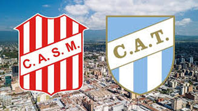

El Clásico Tucumano es el partido del fútbol argentino que enfrenta a los dos clubes más importantes de la provincia de Tucumán en la República Argentina: Atlético y San Martín. Además, es considerado el clásico más importante del norte del país por la convocatoria y por la trascendencia que tiene en la región.
| Clásico Tucumano | Atlético de Tucumán | San Martín (T) |
| Fecha de fundación | 27 de septiembre de 1902 | 2 de noviembre de 1909 |
| Estadio (Capacidad) | Monumental José Fierro(35.200 espectadores) | La Ciudadela(30.500 espectadores) |
| Historial de clásicos oficiales | 101 | 95 |
| Historial de clásicos amistosos | 21 | 24 |
| Títulos de Primera división | 1 (Campeón de Campeones de la República 1960) | 1 (Copa de la República 1944) |
| Títulos de Segunda división | 2 (B Nacional 08/09 y B Nacional 2015) | 1 (B Nacional 07/08) |
| Títulos de Tercera división | 2 (Zonal Noroeste 1987 y Argentino A 07/08) | 2 (Zonal Noroeste 1988 y Federal A 2016) |
| Títulos de Cuarta división | No participó | 1 (Argentino B 04/05) |
| Títulos totales (Locales y Nacionales) | 76 | 73 |
| Clasificaciones al Nacional a través del Torneo Regional | 2 de 3 | 3 de 5 + una invitación (1973) |
| Clasificación en la Tabla histórica de Primera división en profesionalismo | 30° puesto(493 puntos, en 403 PJ) | 36° puesto(335 puntos, en 380 PJ) |
| Mejor ubicación en Primera división | 3° puesto en el Nacional 1979. | 8° (Cuartos de final) en el Nacional 1982 y el Nacional 1985 |
| Participaciones en el Torneo Nacional (1967-1986) | 9 | 16 |
| Participaciones en torneos regulares de Primera división (1986) | 11 | 4 |
| Participaciones totales en Primera División | 20 | 20 |
| Participaciones en torneos internacionales de CONMEBOL | 5 (3 en Copa Libertadores y 2 en Sudamericana) | 0 |
| Ascensos a 1°/ Descensos desde 1° | 2 / 1 | 4 / 4 |
| Descensos totales | 2 | 8 |
| Categoría Actual | Liga Profesional | Primera Nacional |